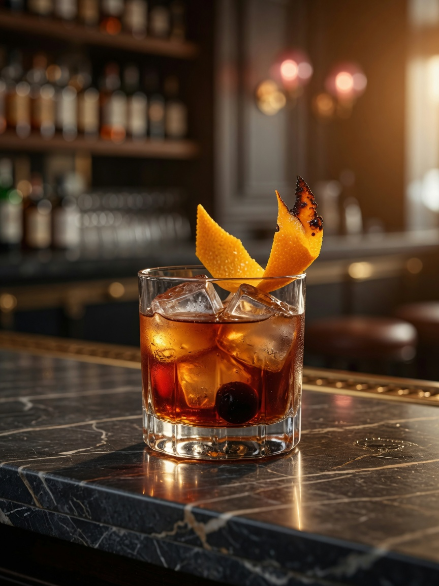
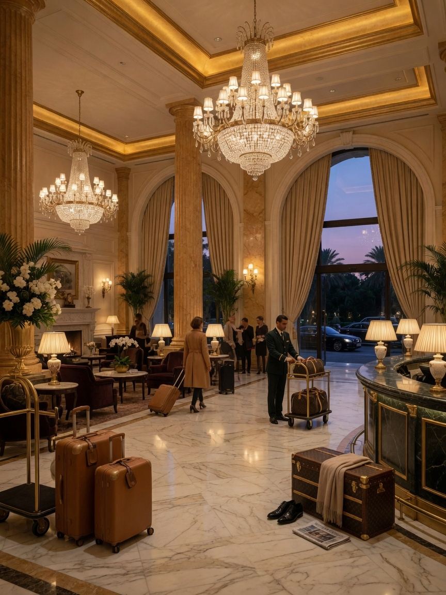

Qualifica AIBES
Associazione Italiana Barman e Sostenitori — riconoscimento professionale nel settore bar e mixology italiano.
Certificazione
Prima del mondo crypto e dell'analisi antifrode, la mia formazione è nata dietro un bancone — in sale eleganti, resort sul mare, teatri storici e bar ad alto volume. L'ospitalità mi ha insegnato disciplina, calma sotto pressione e la cura del dettaglio che applico ancora oggi in ogni progetto.
Ho trascorso anni in Inghilterra, lavorando in hotel di fascia alta, eventi corporate, hospitality VIP e bar ad alto volume. Contesti dove ogni secondo conta: centinaia di coperti, code al bancone, standard inglesi rigorosi e clientela internazionale con aspettative elevate.
Ho imparato a gestire picchi operativi senza perdere qualità, a coordinarmi con team multiculturali e ad adattarmi rapidamente a culture del servizio diverse dalla mia. In Inghilterra il ritmo è serrato, la precisione è tutto — e quella disciplina è rimasta con me.
In tutti questi contesti ho ricoperto ruoli come bartender, barista, commis e hospitality staff — da resort 5 stelle a teatri storici, da banchetti corporate a eventi internazionali. Ogni ambiente ha aggiunto un tassello alla mia comprensione dell'arte del servizio.
Più di un decennio di esperienza nel settore hospitality, con ruoli che spaziano da bartender a commis de rang, da barista a staff eventi e front-of-house. Ho lavorato in hotel, resort, teatri, eventi corporate, banchetti e conferenze — sempre con un obiettivo: superare le aspettative del cliente.
La capacità di mantenere standard elevati sotto pressione non si improvvisa. Si costruisce servendo 200 coperti a cena, gestendo un bar con tre file di clienti alle 23:00, o preparando un servizio VIP prima di uno spettacolo al Royal Shakespeare Company.
Orientamento al cliente, cura del dettaglio, professionalità — questi non sono slogan, sono abitudini consolidate in anni di lavoro sul campo. Competenze trasferibili che oggi applico anche nell'educazione crypto e nella comunicazione con il pubblico.

La mixology per me non è solo versare drink — è creare esperienze. Studio le tecniche di miscelazione classiche e moderne, dalla shakerata perfetta al stir calibrato, dal layering alla costruzione di cocktail originali con identità propria.
Ricerco distillati, esploro aromi, sperimento pairing e bilanciamento gustativo con la stessa cura che oggi dedico all'analisi di dati e protocolli blockchain. In bar di lusso e resort 5 stelle ho affinato un approccio che unisce creatività e rigore professionale.
Ogni cocktail racconta una storia: gli ingredienti, la tecnica, la presentazione. È un equilibrio tra arte e scienza — e quella ricerca dell'equilibrio perfetto è il filo conduttore di tutta la mia carriera.
Credenziali e competenze costruite con formazione teorica e migliaia di ore di pratica sul campo.
Associazione Italiana Barman e Sostenitori — riconoscimento professionale nel settore bar e mixology italiano.
CertificazioneCocktail avanzati, tecniche di bar management, mise en place professionale e gestione operativa del banco bar.
FormazioneLivello base/intermedio — degustazione, abbinamenti cibo-vino, conoscenza territori e vitigni.
EnogastronomiaAlberghiero Molinari di Sciacca — igiene alimentare, sicurezza in sala, bar e cucina professionale.
SicurezzaEsperienza diretta in sala, bar, cucina e gestione operativa — il complemento essenziale alla teoria.
PraticaUn percorso costruito passo dopo passo — dall'Italia al mondo e ritorno.
Le prime esperienze in sala: servizio, mise en place, coordinamento con cucina e bar. Qui è iniziata la passione per l'ospitalità.
🇮🇹 Sicilia, ItaliaPassaggio al banco bar: cocktail classici, servizio al tavolo, gestione scorte e preparazione mise en place serale.
🇮🇹 Limone sul Garda, ItaliaAnni di lavoro in Italia, Inghilterra e Sudafrica — hotel, eventi corporate, resort, bar ad alto volume e team multiculturali.
🇮🇹 🇬🇧 🇿🇦Resort 5 stelle: cocktail di autorità, servizio premium, clientela internazionale e standard di eccellenza.
🇮🇹 Sicilia, ItaliaTeatro storico in UK: bar pre-show e intervallo, servizio rapido sotto pressione, clientela esigente in contesto culturale di prestigio.
🇬🇧 Stratford-upon-Avon, UK

L'ospitalità mi ha insegnato che il servizio migliore è invisibile — anticipi, ascolti, consegni. Oggi applico la stessa filosofia nell'educazione crypto: rendere il complesso semplice, con cura e rispetto per chi mi ascolta.
— Stefano Davide Ciancimino